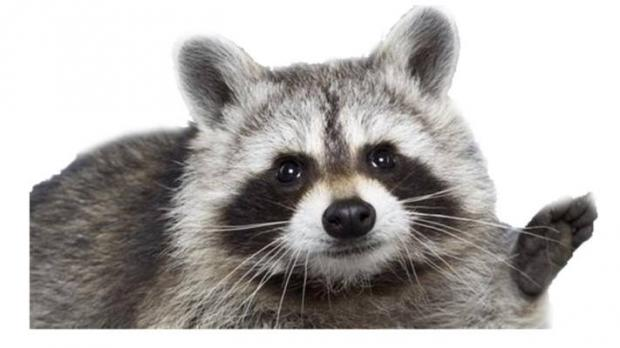
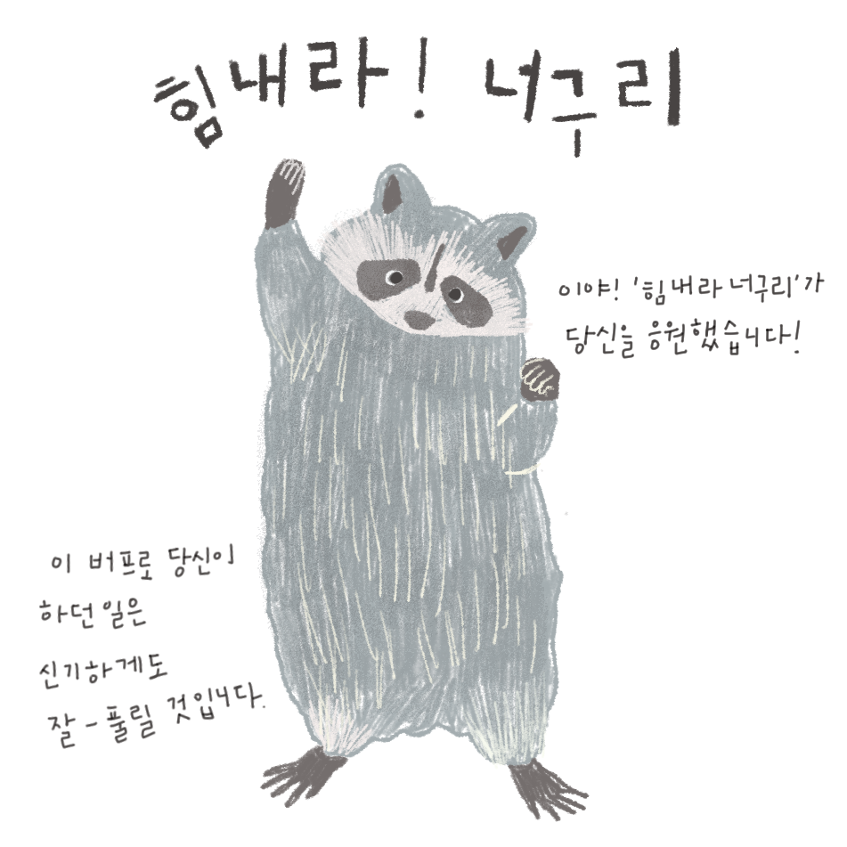

포유류에 속하는 식육목 개과의 동물의 일종.
 몸길이 50-68cm, 꼬리길이 13-20cm로 몸통은 여우보다 작고 살이 쪘으며 다리는 비교적 짧고 입끝이 뾰족하다. 귓바퀴는 작고 둥글며 꼬리는 굵고 짧다. 몸빛깔은 대체로 검은색에 가깝고 등의 가운데선의 띠, 눈 밑의 반점, 앞다리의 띠는 검은색이 더욱 짙다. 털은 길어서 등의 긴털은 9cm나 된다. 꼬리에는 털이 많고 몸 위로 세울 수 있다. 위협을 느끼면 죽은척하거나 비리고 고약한 냄새가 나는 액체를 뿌린다.
야행성 동물이지만 낮에도 나타날 때가 종종 있으며 바위나 나뭇구멍 같은 곳에 산다.
임신기간은 62일이고 5-6월에 바위구멍에 4-5마리의 새끼를 낳는다. 한 쌍이 함께 생활하며, 수컷은 암컷이 새끼 기르는 것을 도와준다.
개과의 동물로서는 유일하게 겨울잠을 잔다. 모피는 방한용으로 쓰이고 털은 붓의 재료로 많이 쓰인다. 경계심이 부족하기 때문에 쉽게 덫에 걸리며, 짧은 다리에 비해 몸집이 비대하여 빨리 달리지는 못한다.
한국, 중국, 일본, 러시아 동부에 분포해 있다. 한반도에서는 표범이나 늑대등 포식동물이 멸종위기에 처하면서 개체수가 늘어나 광견병등 여러 가지 문제가 되고 있다.
1928년에 모피를 얻으려는 목적으로 소련(지금의 러시아)에 들여온 것이 야생화된 뒤, 폴란드, 동독(독일의 그 당시)를 거쳐 지금은 핀란드나 독일에도 생식하고 있다. 최근에는 프랑스나 이탈리아에서도 목격된 예가 있다.
최근에는 같은 종으로 분류되었던 너구리에 대한 연구가 필요한 것으로 여겨진다. 기무라 준페이(木村 純平) 서울대 수의대 교수 팀은 동아시아 지역 너구리의 두개골 형태를 비교한 결과 지역에 따라 너구리의 특징이 다르게 나타났으며, 그 중에서도 특히 일본 너구리의 생물학적 특징이 확연히 다르다는 사실을 발견했다. 북쪽에 서식하는 너구리는 어금니가 발달하고 주둥이가 길어 육식에 유리한 특징을 나타내는 등 지역에 따라 식성 또한 달라진다는 사실을 알아냈다. 특히 연구진은 일본 너구리의 두개골 길이와 광대뼈 넓이가 대륙에 사는 너구리에 비해 현저하게 작다는 사실도 발견했다. 연구팀이 전국에서 모은 너구리 사체를 토대로 한국 너구리의 두개골 표본을 제작하고 각국 연구기관에 보관된 너구리 두개골 339개를 비교한 결과, 극동 러시아와 북해도 너구리 집단의 두개골 크기가 가장 컸다. 대륙 너구리 집단은 일본 본토 너구리 집단에 비해 육식성을 보이는 열육치, 먹이를 자르는 날카롭고 큰 어금니가 발달하고 광대뼈가 컸으며, 주둥이 길이가 짧았다. 연구팀은 기존 연구에서 일본본토집단의 너구리가 다른 집단 너구리와 DNA 염기서열 구성에도 차이가 나타났다는 점을 종합하면 대륙 너구리와 다른 종으로 분류돼야 한다고 제안했다.
학명: Nyctereutes procyonoides
영양 단계: 잡식성
무게: 4.2kg (성체)
보존 상태: 관심 대상 (안정)
길이: 45cm (성체)
임신기간: 62일